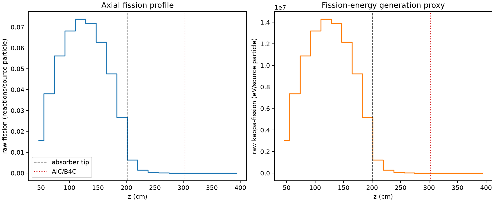
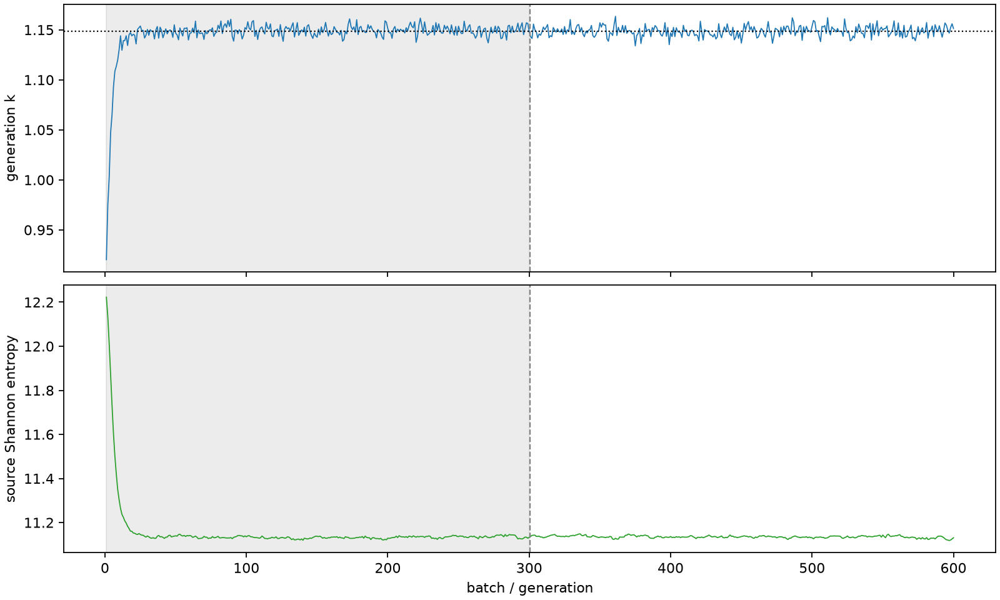

| field | value |
|---|---|
| experiment | V2-STAGE_128_OGRENCI_04-0021 |
| k | 1.148496055213922 |
| MC standard error | 0.00018850043593599325 |
| seconds | 1016.2062331550005 |
| acceptance | not_assessed |
| convergence | review_required |
Completed is output integrity only; physical and statistical review required. Zero tallies do not prove zero production or zero uncertainty.
| diagnostic | value |
|---|---|
| geometric fuel voxels | 5280 |
| zero fission tally voxels | 993 |
| low signal fuel voxels | 1872 |
| low signal fission share | 6.616122250393134e-05 |
| low signal kappa share | 6.619250618330823e-05 |
| important fission share | 0.9500004317337849 |
| previous filter included | 3408 |
| duration estimate s | 1562.5173488400023 |
| actual minus estimate s | -546.3111156850018 |
| fission relative MC error | statistics |
|---|---|
| all_geometric_fuel | {"voxels": 5280, "positive_mean_voxels": 4287, "zero_mean_voxels": 993, "undefined_relative_error_voxels": 993, "median": 0.012479827253464058, "p95": 0.8455365958689592, "maximum": 1.0000000000000002} |
| low_signal | {"voxels": 1872, "positive_mean_voxels": 879, "zero_mean_voxels": 993, "undefined_relative_error_voxels": 993, "median": 0.5646277054449531, "p95": 1.0, "maximum": 1.0000000000000002} |
| important_95pct | {"voxels": 2116, "positive_mean_voxels": 2116, "zero_mean_voxels": 0, "undefined_relative_error_voxels": 0, "median": 0.006905638531969237, "p95": 0.01029958329414347, "maximum": 0.014079680917647814} |
| outside_previous_filter | {"voxels": 1872, "positive_mean_voxels": 879, "zero_mean_voxels": 993, "undefined_relative_error_voxels": 993, "median": 0.5646277054449531, "p95": 1.0, "maximum": 1.0000000000000002} |
| kappa_fission relative MC error | statistics |
|---|---|
| all_geometric_fuel | {"voxels": 5280, "positive_mean_voxels": 4287, "zero_mean_voxels": 993, "undefined_relative_error_voxels": 993, "median": 0.012465742352104778, "p95": 0.8463520605427445, "maximum": 1.0000000000000002} |
| low_signal | {"voxels": 1872, "positive_mean_voxels": 879, "zero_mean_voxels": 993, "undefined_relative_error_voxels": 993, "median": 0.5627058278525616, "p95": 1.0, "maximum": 1.0000000000000002} |
| important_95pct | {"voxels": 2116, "positive_mean_voxels": 2116, "zero_mean_voxels": 0, "undefined_relative_error_voxels": 0, "median": 0.006897546724098988, "p95": 0.010288291103371186, "maximum": 0.014064450750826839} |
| outside_previous_filter | {"voxels": 1872, "positive_mean_voxels": 879, "zero_mean_voxels": 993, "undefined_relative_error_voxels": 993, "median": 0.5627058278525616, "p95": 1.0, "maximum": 1.0000000000000002} |
| axial bin | fission share | kappa-fission share |
|---|---|---|
| 1 | 0.03311014279425216 | 0.0331113881481755 |
| 2 | 0.08126209182315873 | 0.08126150842913175 |
| 3 | 0.11991486765946824 | 0.11991412299047713 |
| 4 | 0.14542362437391645 | 0.14542269686909537 |
| 5 | 0.1572842856172169 | 0.15728288969238663 |
| 6 | 0.15320902164594286 | 0.153207554322421 |
| 7 | 0.13384541080730109 | 0.13384412577139151 |
| 8 | 0.10137506832599659 | 0.10137431524348432 |
| 9 | 0.057152635042324616 | 0.057152690160474626 |
| 10 | 0.013348590381406546 | 0.01335292595084282 |
| 11 | 0.003121721480530019 | 0.0031228838420700447 |
| 12 | 0.0007352705793062787 | 0.0007355392960054762 |
| 13 | 0.0001664656180266785 | 0.00016652897520803356 |
| 14 | 3.986002353630877e-05 | 3.987751214038761e-05 |
| 15 | 9.314266219354884e-06 | 9.321545578292644e-06 |
| 16 | 1.5253075946001157e-06 | 1.52679412233075e-06 |
| 17 | 9.748097376119094e-08 | 9.769258966766807e-08 |
| 18 | 6.772828855212341e-09 | 6.764405009434778e-09 |
| 19 | 0.0 | 0.0 |
| 20 | 0.0 | 0.0 |
Histories include the inactive-to-active transition at batch 300. kappa-fission approximates fission energy production, not total heat deposition.

